La biblioteca de cuentos
44 cuentos originales con valores y humor, ilustrados y narrados en voz alta en español y en inglés. Abre uno para leerlo con sus dibujos y escucharlo página a página.
Mostrando 44 cuentos
- ¡Nuevo!
-
¡Nuevo!
Exploradores · 7-10 años
Un pingüino en La Polar
Nerea vivía encima de La Polar, la heladería de sus padres en Puerto Suma, donde hacía tanto calor que hasta las gaviotas pedían cucuruchos
-
¡Nuevo!
Aventureros · 11-15 años
Radio Nora
En Puerto Suma, las noticias viajaban a dos velocidades: la del periódico, que salía los domingos, y la de Nora Vidal, que salía cada vez que abría la boca
-
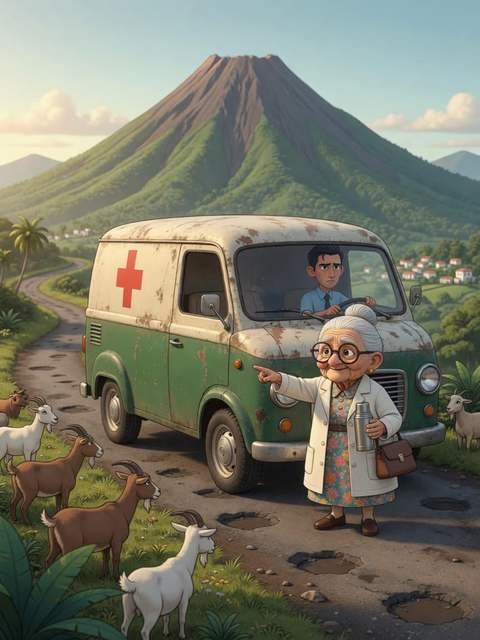
¡Nuevo!Maestros · 16+ años
No apta
En Puerto Suma solo había un examinador de conducir, y todo el mundo coincidía en que era una pena que fuera Ramón Arteaga
-
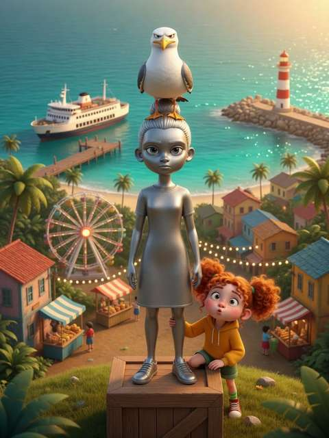
IncluidoAventureros · 11-15 años
Prohibido moverse
En la feria de Puerto Suma había churros, una noria y una estatua plateada que no se movía jamás
-
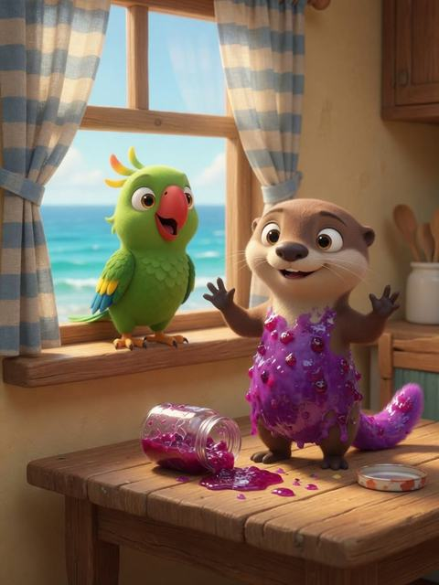
Peques · 4-6 años
Nina y la mora gigante
Nina es una nutria de Puerto Suma. ¿Sabes qué le pasó un día, sumanauta?
-
Exploradores · 7-10 años
Tano y el abrazo más lento del mundo
Tano es un mono con una cola larguísima y un orgullo todavía más largo. Es el mejor trepador de la isla
-
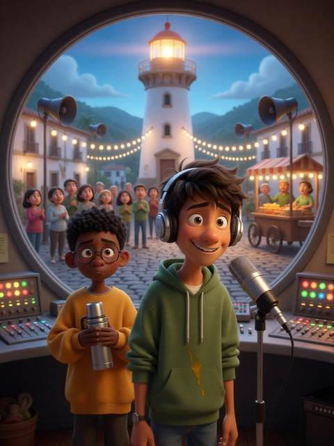
Aventureros · 11-15 años
Fue el zumo (y otras excusas)
Radio Faro emite desde lo alto del viejo faro de Puerto Suma, en un cuartito redondo donde el eco hace que todos suenen como si hablaran desde un cubo
-
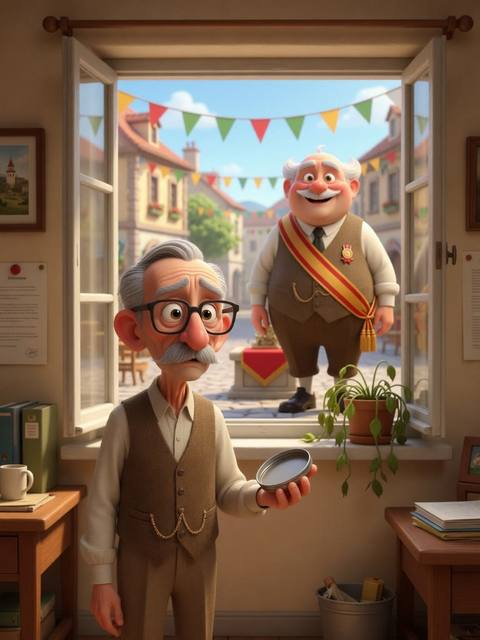
Maestros · 16+ años
La frase de la lata
Puerto Suma tenía por alcalde a Don Anselmo Quirós, un hombre ancho como un barril, con una voz que hacía temblar a las gaviotas y una letra que hacía llorar a los carteros
-
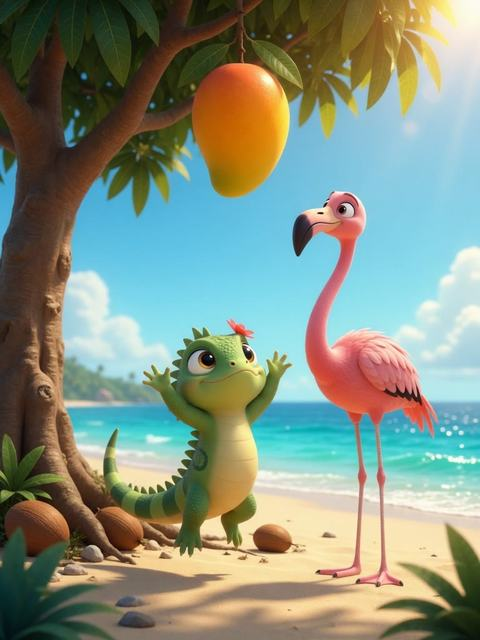
IncluidoPeques · 4-6 años
Iris y el mango de arriba
Iris es una iguana pequeña y verde. Le encantan los mangos
-
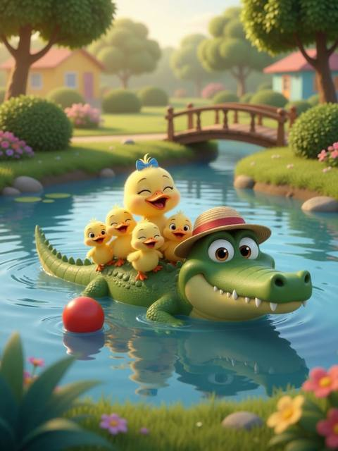
IncluidoPeques · 4-6 años
La sonrisa de Goyo
Goyo es un cocodrilo grandote. Vive en el estanque del parque de Puerto Suma
-
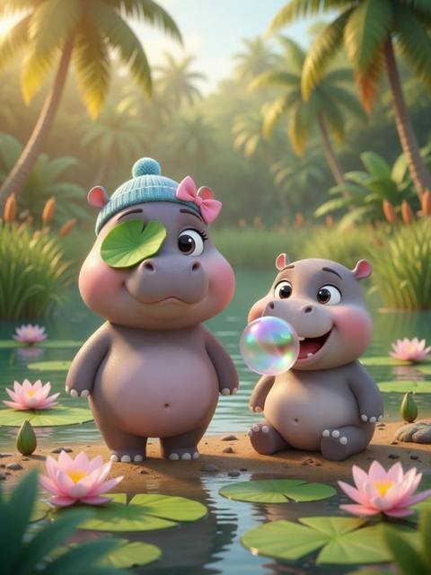
IncluidoPeques · 4-6 años
Pepa quiere ser bebé
Pepa es una hipopotamita muy redonda. Vive en la laguna de los nenúfares con su mamá y con Bubu, su hermanito bebé
-
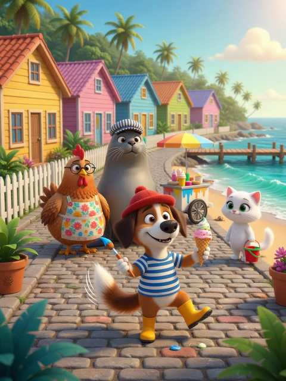
IncluidoExploradores · 7-10 años
El perro que lo prometía todo
Lino era un perro pescador de Puerto Suma, con un gorro de lana rojo que no se quitaba ni en agosto
-
Incluido
Exploradores · 7-10 años
La bufanda de la abuela Rufina
En el islote de los pelícanos, frente a Puerto Suma, vivía Bernabé, un pelícano joven con un pico tan grande que le cabía un melón dentro
-
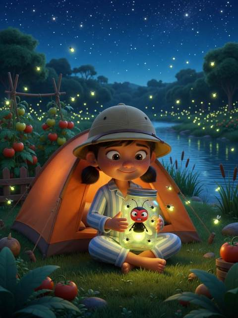
IncluidoExploradores · 7-10 años
Martina y la lámpara de luciérnagas
Martina tenía nueve años, un salacot de exploradora que le quedaba grande y una costumbre: leer aventuras hasta muy tarde
-
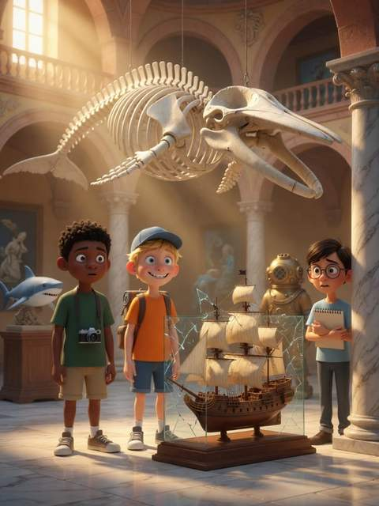
IncluidoAventureros · 11-15 años
El Pacto de la Pandilla
Leo y Darío eran amigos desde que, con cuatro años, se cambiaron los bocadillos sin preguntar y descubrieron que los dos odiaban el queso
-
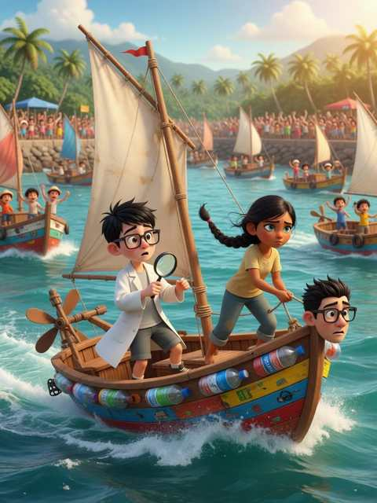
IncluidoAventureros · 11-15 años
Obviamente, una sirena
Gonzalo Pomares tenía trece años, una bata blanca que se ponía hasta para merendar y una palabra favorita: «Obviamente»
-
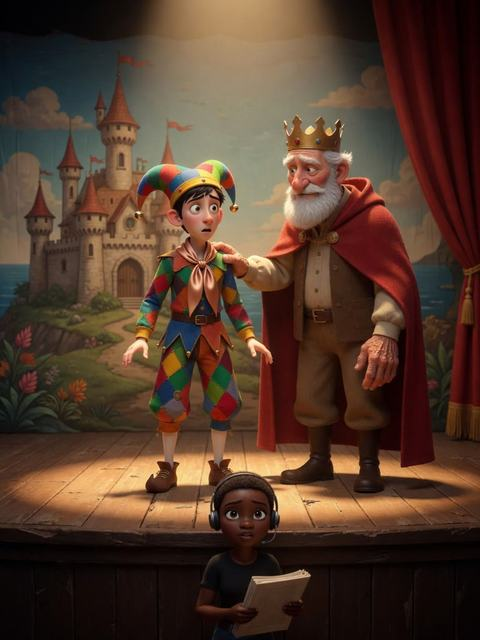
IncluidoMaestros · 16+ años
El crítico sale a escena
Álvaro Quintanilla tenía dieciséis años, un pañuelo de seda que llevaba al cuello incluso en julio y el programa más escuchado de la radio del instituto de Puerto Suma: «La butaca de Álvaro»
-
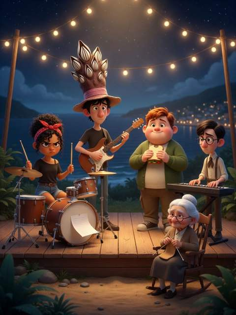
IncluidoMaestros · 16+ años
La lista de agravios
Noa Cifuentes tocaba la batería como quien cobra deudas: con puntualidad y sin piedad
-
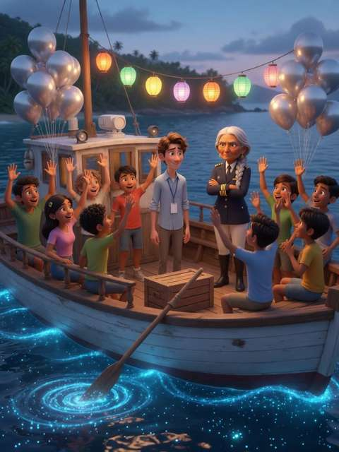
IncluidoMaestros · 16+ años
Lo votasteis vosotros
Hugo Salcedo ganó las elecciones a delegado de segundo de Bachillerato con una sola promesa: «Todo se votará»
-
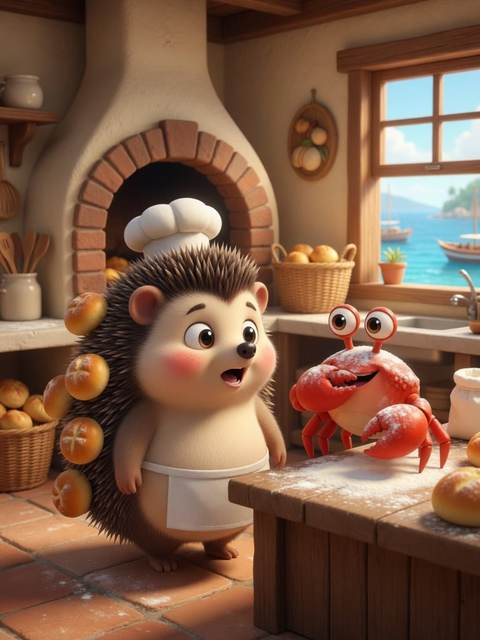
Peques · 4-6 años
Bruno y los panecillos pinchados
Bruno es un erizo panadero de Puerto Suma. Hace panecillos redondos y blanditos
-
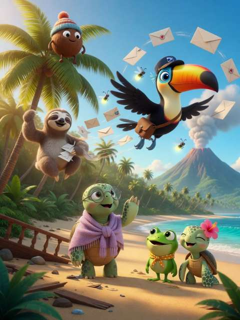
Exploradores · 7-10 años
Tomasa nunca espera al final
Tomasa era una tucana cartera de Puerto Suma, la más rápida de la isla. Tenía un pico naranja enorme, una gorra azul y una manía: nunca dejaba terminar a nadie
-
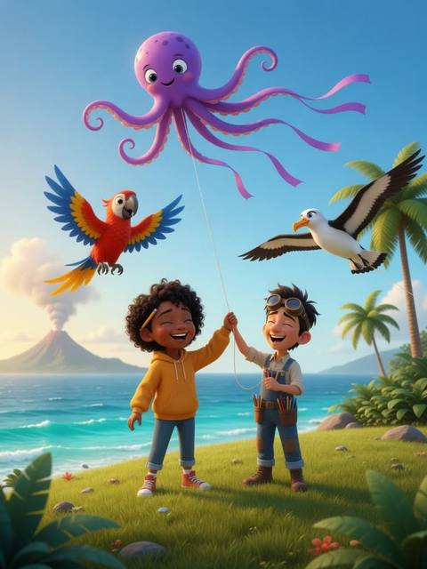
Aventureros · 11-15 años
El Pulpo Chiflado
Nora llegó a la escuela de Puerto Suma a mitad de curso, con una mochila llena de lápices y ningún amigo
-
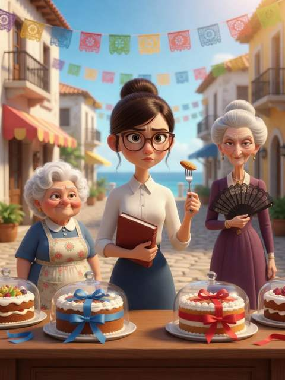
Maestros · 16+ años
Dos almendras
En Puerto Suma había una sola cosa seria al año, el Certamen de Tartas, y una sola guerra, la de Doña Amparo contra Doña Clotilde
-
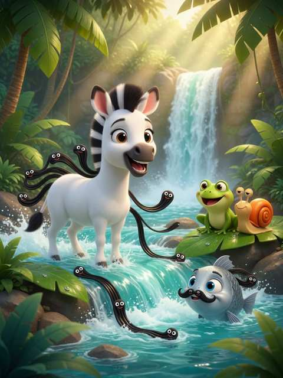
IncluidoPeques · 4-6 años
Las rayas de Zoe se escapan a jugar
¡Flis, flas! La cebra Zoe se ducha en la cascada. Sus rayas resbalan como espaguetis
-
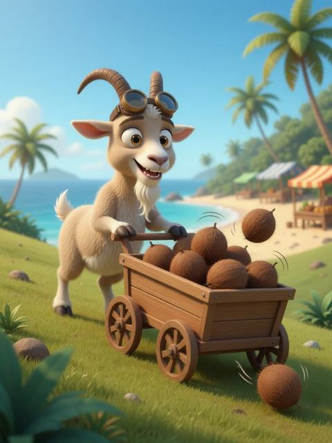
IncluidoPeques · 4-6 años
Las ruedas cuadradas de Fermina
En lo alto del volcán dormido vive Fermina, la cabra inventora. Hoy hay fiesta en la playa
-
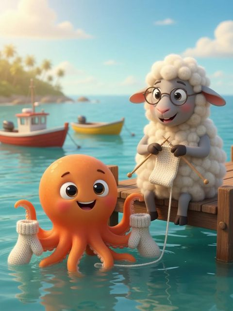
IncluidoPeques · 4-6 años
Ocho calcetines para Paco
Paco es un pulpo naranja. El mar está calentito y brilla el sol
-
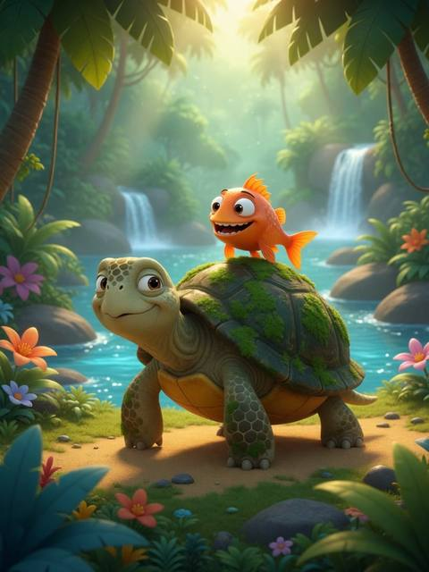
IncluidoPeques · 4-6 años
Tita y el Pez Pegajoso
Tita, la tortuga, pasea junto al río. Pico, el loro, vuela por encima
-
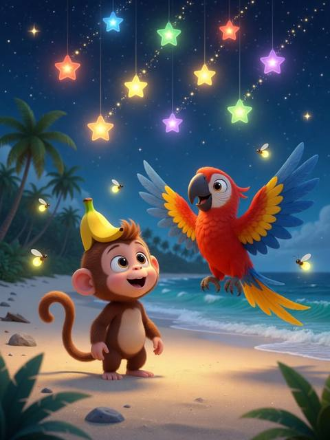
IncluidoPeques · 4-6 años
Tito y las estrellas que caen
¡Oh! ¡Caen estrellitas! Tito, el mono con plátano en la cabeza, alza los brazos
-
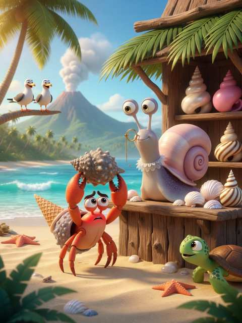
IncluidoExploradores · 7-10 años
El cangrejo que quería pagar con su casa
La concha de Tobías, el cangrejo ermitaño, era gris, llena de bultos y tan pequeña que le apretaba hasta las ideas
-
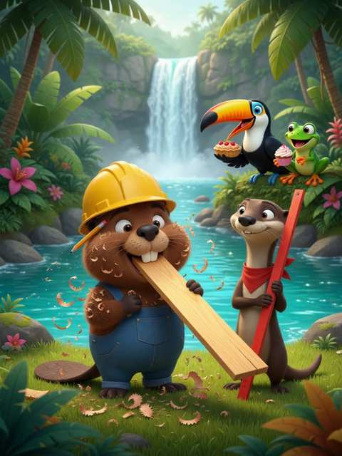
IncluidoExploradores · 7-10 años
El castor que medía a mordiscos
Bruno era un castor aprendiz de constructor y tenía su primer encargo: un puente sobre el río de la selva
-
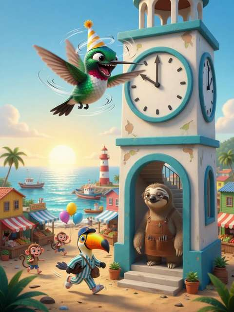
IncluidoExploradores · 7-10 años
El colibrí que empujaba las horas
Zum era un colibrí verde con gorrito de fiesta que no sabía estarse quieto. Comía zumbando, se bañaba zumbando y hasta roncaba zumbando: zzzum, zzzum
-
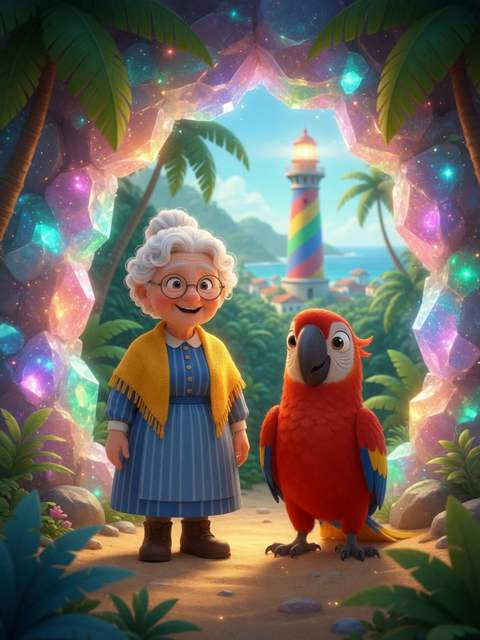
IncluidoExploradores · 7-10 años
Los cristales cosquilleros
—¡Escucha, Pico! —dijo la abuela Matilde, ajustándose las gafas redondas. De una cueva escondida entre las plantas salía un ruidito: «jijiji»
-
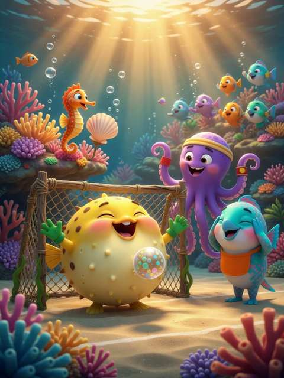
IncluidoExploradores · 7-10 años
Pompón, el portero que se hinchaba de risa
Pompón era un pez globo amarillo con lunares. Cuando se reía, ¡fuuup!, se hinchaba como una pelota
-
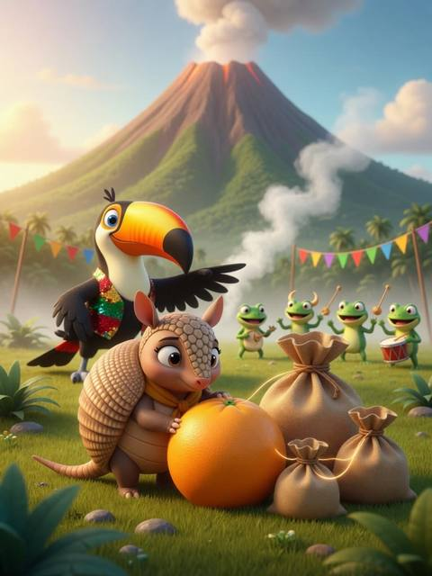
IncluidoAventureros · 11-15 años
A lo mejor
Aurelia, una armadilla con pañuelo mostaza, tenía una alergia que no salía en ningún libro de medicina: era alérgica al «a lo mejor»
-
Incluido
Aventureros · 11-15 años
El hipo de la ballena Bárbara
Bárbara era una ballena jorobada enorme, educadísima y, desde hacía tres días, con hipo. Cada hipido le sacaba por el lomo un chorro tan alto que las gaviotas tenían que frenar en seco y dar un rodeo
-
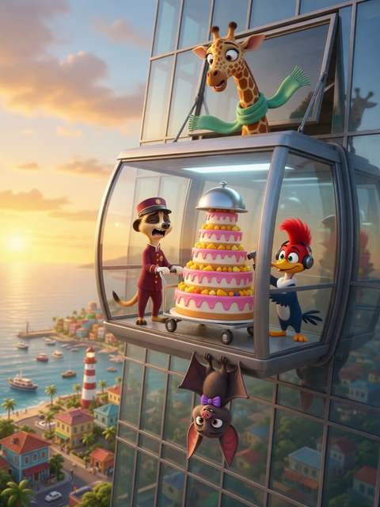
IncluidoAventureros · 11-15 años
El testigo boca abajo
Simón era el ascensorista de la Torre Mirasol, el rascacielos más alto de Puerto Suma, con un ascensor de cristal que subía por fuera como una burbuja con prisa
-
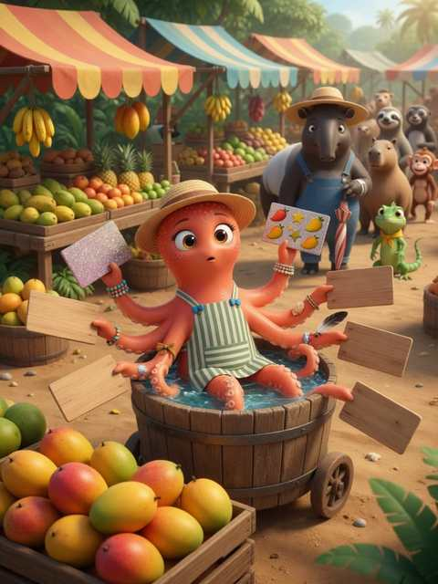
IncluidoAventureros · 11-15 años
Ocho brazos, ocho ofertas
En el mercado de Puerto Suma, Otilia vendía mangos desde un barril de agua de mar con ruedas
-
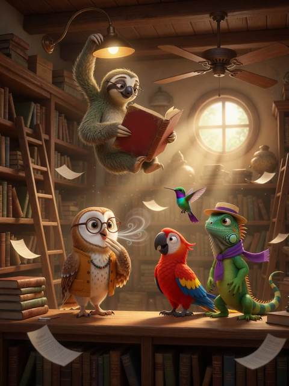
IncluidoAventureros · 11-15 años
¡SHHH!
En la librería de Puerto Suma, colgado boca arriba de la lámpara de latón, vive Celso, un perezoso que lee a cámara lenta
-
Incluido
Maestros · 16+ años
La farera no juega a la suerte
Doña Remedios Albarrán, farera de Puerto Suma, lleva el uniforme planchado, la gorra en su sitio y la expresión de una tabla de mareas
-
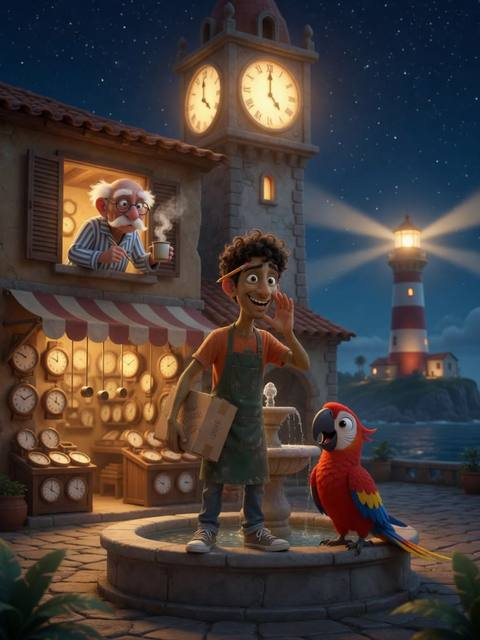
IncluidoMaestros · 16+ años
Las doce o las cero
El faro de Puerto Suma llevaba un siglo diciendo lo mismo: guiño-guiño, pausa, guiño-guiño, que en idioma de faro significa «aquí hay rocas; usted verá»
-
Incluido
Maestros · 16+ años
Medio volcán
En Puerto Suma todo estaba en el mapa: los muelles, la fuente de la plaza, el faro con su altura grabada en una placa que nadie había comprobado y hasta el bache de la calle del Pez, señalado con una crucecita
-
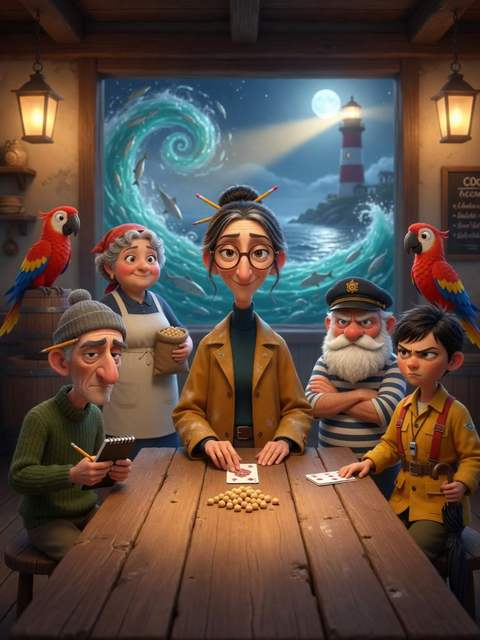
IncluidoMaestros · 16+ años
Pierdo a las cartas
En Puerto Suma, junto a los remolinos turquesa, faenan tres barcas, y cada una lleva pintado en el casco el carácter de su dueño
-
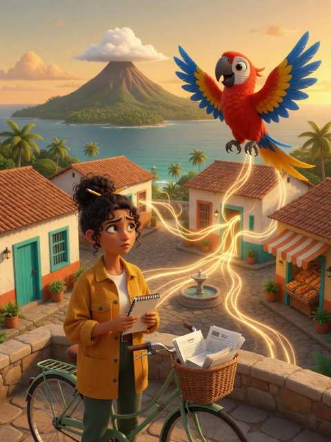
IncluidoMaestros · 16+ años
Se sabe desde las nueve
Después de comer, Adela Brea subió a la redacción de La Gaceta del Faro con una barra de pan asomando de la cartera
¡Y en el juego, mucho más!
En Sumanautas cada cuento se lee narrado en voz alta, con las palabras iluminándose al leer y preguntas al final, dentro de una aventura en 3D llena de cosas que aprender. ¡Y cada semana llegan cuentos nuevos!
Descárgalo en elApp Store